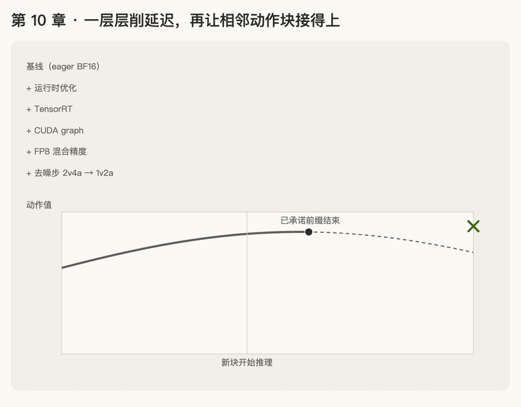

第 10 章 · 部署：从 720 ms 到 124 ms，再让动作连得上、做得比人快
本章回答：一个要画视频的 WAM 怎么做到实时？剩下的延迟里，怎么让相邻两个动作块不"卡顿、跳变"？演示有多快机器人就只能多快吗？
讲解日期：2026-11-15 · 上一章：第 9 章 评测 · 下一章：第 11 章 开放问题
对应原文：materials/text/gr00t2-whitepaper.txt§4.6 L1414–L1520；附录 I.1 L6867–L6990（Tab. 27 L6958）、I.2 L6991–L7047（Tab. 28）、I.3 L7048–L7122（Tab. 29）；附录 K.5 L7858–L7891；§4.7.2 L1558–L1580
本章缩写：TensorRT = NVIDIA 的推理优化引擎（Tensor 张量 / RT = RunTime 运行时）；CUDA = Compute Unified Device Architecture（计算 / 统一 / 设备 / 架构）；FP8 / FP16 / BF16 = 8 / 16 位浮点、Brain Float 16；RTC = Real-Time Chunking（实时 / 分块）；K/V = Key / Value（键 / 值）；VAE = Variational AutoEncoder（变分 / 自编码器）；p50 = 50th percentile（中位数）。全部缩写见 附录 · 缩写与术语表
讲解
第一步：一层层削延迟（2026-11-15）
类比：赶早班车的人。 先别重复做事（昨晚把衣服摆好 = 复用文本特征、预计算时间步），再换更快的交通工具（TensorRT 编译），再把固定路线背熟（CUDA graph 回放），再轻装（FP8），最后少停几站（减少去噪步数）。
服务架构（§4.6.1、附录 K.5）：客户端-服务端。机器人客户端发相机历史、状态、指令；服务端返回动作块；客户端缓存后按控制器频率执行，同时请求下一块。
削减手段（L1446–L1460）： 1. 去掉重复计算：指令不变就复用文本特征；预计算时间步条件；纯动作的去噪步复用最近一次视频步的 K/V（第 2 章的 cached pass）； 2. 编译：视频编码器和 Transformer 编成 TensorRT 引擎，用 CUDA graph 回放； 3. 量化：支持的 checkpoint 上，选定的投影层和 FFN 层用 FP8（在机器人观测上校准）； 4. 少步：在成功率和平滑度允许时减少去噪步数； 5. 服务路径：流式和预取把视频编码挪到请求之前。
例子：G1 上 Turbo 的逐项瀑布（Fig. 19，500 次中位数，ms）：
| 累计改动 | RTX 5090 | Jetson Thor（120 W） |
|---|---|---|
| 基线（eager BF16 PyTorch） | 224.73 | 720.41 |
| + 运行时优化 | 183.66 | 614.53 |
| + TensorRT | 95.05 | 256.12 |
| + CUDA graph | 90.01 | 254.00 |
| + FP8 混合精度 | 54.79 | 182.22 |
| + 去噪步 2v4a → 1v2a | 38.40 | 123.97 |
TensorRT 一项在两张卡上都是最大的单项收益。
各本体汇总（Tab. 27，p50，ms）：
| 本体 | 模型 | 硬件 | 基线 | 优化后 | 加速 |
|---|---|---|---|---|---|
| Dexter（3 路、48 步动作、2v2a） | GR00T 2 | RTX 5090 | 449.20 | 152.78 | 2.94× |
| Dexter | GR00T 2 | DGX Station GB300 | 219.02 | 48.47 | 4.52× |
| G1（3 路、80 步、1v2a） | Turbo | RTX 5090 | 224.73 | 38.40 | 5.85× |
| G1 | Turbo | Jetson Thor | 720.41 | 123.97 | 5.81× |
| YAM（4 路、48 步、2v4a） | GR00T 2 | RTX 5090 | 550.96 | 179.79 | 3.06× |
| YAM | GR00T 2 | DGX Station GB300 | 386.06 | 54.00 | 7.15× |
怎么验证没削坏（附录 I.1）：先做数值比对（同观测、同初始噪声，和 eager BF16 比新生成动作的 MSE，排除 padding 和已承诺的 RTC 前缀），再仿真，最后真机——成功率、完成时间、动作平滑度一起看；"数值误差小"不等于"任务能成功"。
一句话：复用 → TensorRT → CUDA graph → FP8 → 少步，加速 2.9–7.2×；每一步都要过真机验收。
第二步：noisy-prefix RTC——让动作块接得上（2026-11-15）
类比：接力跑交棒。 下一棒（新动作块）起跑时，上一棒（已承诺执行的动作）还在跑。如果下一棒不看上一棒，交棒会撞上（跳变）；如果下一棒死盯着上一棒的每一步，又会被带偏（照抄旧计划）。最好是"大致看着上一棒的节奏起跑"。
问题：推理有延迟 \(d\)，机器人在这段时间里继续执行旧块。等待会中断运动；不管延迟、异步执行又会在块与块之间产生不连续（L1468–L1471）。
训练时 RTC（Black et al., 2025）：让每次预测以"已承诺执行的动作前缀"为条件。GR00T 2 发现干净前缀会让短延迟下成功率下降，于是用 noisy-prefix RTC：微调时给条件前缀加高斯噪声，减少对旧计划的依赖但保留连续所需的上下文；推理时用干净的已承诺动作（L1472–L1478）。只需在后训练策略上再微调 5k 步。
例子：效果（RoboDojo 8 个精细任务，模拟延迟，Tab. 28）：
| 延迟 | 异步执行（同权重） | 干净前缀 RTC | noisy-prefix RTC |
|---|---|---|---|
| 160 ms | 32.8% | 30.7% | 34.8% |
| 320 ms | 15.0% | — | 21.4% |
平滑度：160 ms 下峰值指令 jerk（加加速度）降 69%；320 ms 下 95 分位跨块 jerk 降 87%（L1505–L1508）。
一句话：给"已承诺前缀"加噪训练、干净前缀推理，既连得上又不照抄旧计划。
第三步：按阶段变速——比演示的人更快（2026-11-15）
类比：开车，直道踩油门、弯道减速。 伸手、搬运可以快；抓取、拧螺丝不能快。
做法（§4.6.3、附录 I.3）：把任务拆成有语义的阶段（伸手、抓取、搬运、拧……），它们对加速的容忍度不同；一个 agent 评估加速后的 rollout，根据失败调整每阶段的速度表；部署时一个轻量的子任务预测器从当前观测预测动作块覆盖哪些阶段，按速度表对动作块重新定时；再做块间时间对齐和跨块 jerk 平滑。
例子：Tab. 29（Dexter，只算成功 episode 的平均完成时间）：
| 任务 | 原速成功率 | 加速成功率 | 原速用时 | 加速用时 | 缩短 |
|---|---|---|---|---|---|
| 制作快递标签 | 60% | 65% | 95 s | 81 s | 14.7% |
| 手电筒换电池 | 55% | 60% | 80 s | 66 s | 17.5% |
| 粗盐过滤 | 85% | 80% | 184 s | 137 s | 25.5% |
正文汇总为"缩短 15–26%"（L1728），成功率基本保持。
训练端的配套——数据加载（§4.7.2，L1558–L1580）：数据存 LanceDS（Lance 列式格式），每个数据集有 step / episode / media 三张表，版本化快照，质检规则离线算成"可用样本起点"视图；1,024 张 GB300 上每秒约 1.2 万个样本窗口，等数据平均 0.37 ms，只占 step 时间的 0.049%——部署和训练两头都在为"视频太重"买单。
一句话：按阶段给动作块重新定时，完成时间缩短 15–26%，机器人第一次可以比演示者更快。
动画演示：一层层削延迟，再让相邻动作块接得上

可交互版：animations/10-latency-rtc.html（▶ 播放、→ 单步、↺ 从头开始；硬件按钮：RTX 5090 / Jetson Thor）
怎么看： 1. 上半部分每步亮一行 Fig. 19 的累计延迟，TensorRT 一行（橙色）缩得最多（第一步）。 2. 下半部分依次画三种块交接：异步（接缝跳变）、干净前缀（贴着旧计划）、noisy-prefix（平滑接上又转向新目标）——曲线是示意（第二步）。
练习与作答记录
题 1（第一步 瀑布）：Jetson Thor 上，TensorRT 这一步省了多少 ms，占基线的百分之几？FP8 那一步呢？
作答：（待作答）
题 2（第二步 RTC）：为什么"干净前缀"反而降低成功率？用"照抄旧计划"的类比解释，并说出加噪为什么能缓解。
作答：（待作答）
题 3（第三步 变速）：粗盐过滤加速后成功率从 85% 降到 80%（20 次试验）。这算"保持"吗？用第 4 章的 SEM 粗估。
作答：（待作答）
口诀
复用编译图回放，八位少步再预取；
交棒前缀加点噪，接得上又不照抄；
直道加速弯道慢，机器快过示范人。
本章复习卡片
G22、G23（练习做完后，按答错、卡住的地方再补。）
附录 · 延伸阅读
推荐阅读
| 读什么 | 读哪里 | 读它为了什么 |
|---|---|---|
| ★ GR00T 2 白皮书 | §4.6 L1414–L1520 | 本章原文 |
| ★ GR00T 2 白皮书 | 附录 I.1–I.3 L6867–L7122 | 每个本体的服务配置、RTC 消融、变速 |
| Real-Time Chunking（Black et al., 2025） | vla-deep-dive/materials/text/papers/real-time-chunking-2506.07339.txt |
RTC 原论文 |
| LeRobot RTC 文档 | vla-deep-dive/materials/code/lerobot/repo/docs/source/rtc.mdx |
开源实现 |
pytorch-deep-dive 讲义 |
编译栈、CUDA graph 章 | torch.compile / CUDA graph 原理 |
cuda-programming 讲义 |
Tensor Core / FP8 章 | 低精度矩阵乘 |
数学原理
- Jerk（加加速度）：位置的三阶导；动作块接缝处的跳变在 jerk 上最明显。
- CUDA graph：把一串 kernel 启动录成一张图一次性回放，省掉 CPU 端逐个启动的开销。
- FP8 校准：用代表性输入统计激活范围，选缩放因子，让 8 位能覆盖主要数值范围。
公式清单
| 公式 | 意思 |
|---|---|
| 加速比 = 基线延迟 / 优化后延迟 | Tab. 27 |
| 缩短比例 = (原用时 − 加速用时) / 原用时 | Tab. 29 |
代码对照
本章暂无代码对照：可在本机用一个小 DiT 复现"eager → torch.compile → CUDA graph"的延迟瀑布（MPS 上无 CUDA graph，标 [GPU]）。